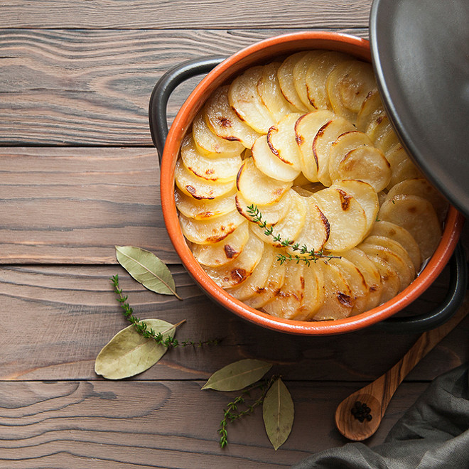
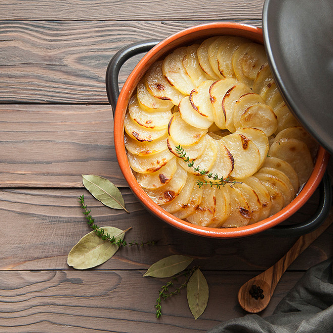
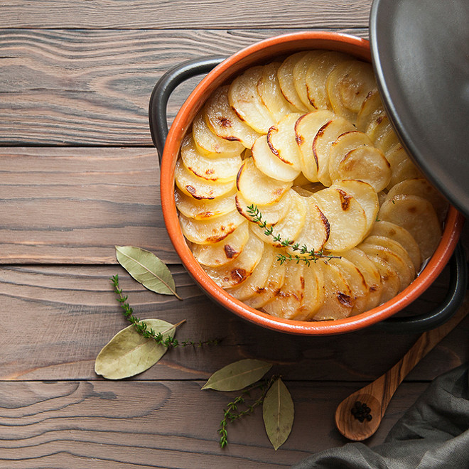
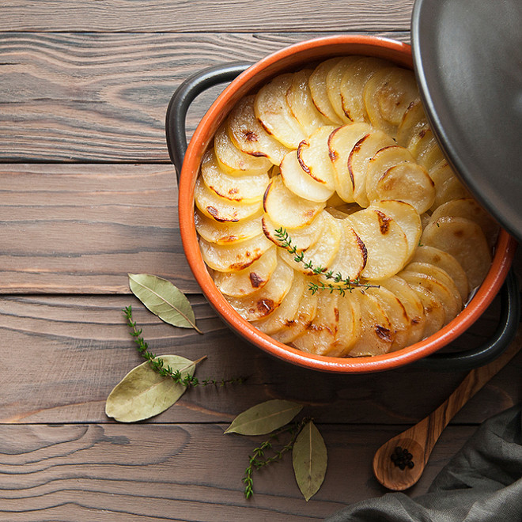

Baeckeoffe
 

 

Le baeckeoffe (de l’alsacien Beckeoffe, littéralement « four à pain »), est un plat traditionnel emblématique de la
cuisine alsacienne, à base de pommes de terre, de légumes, et d'assortiment de viandes d'agneau, de bœuf et de porc,
mariné. Le tout est mijoté à l'étouffée sur plus de 24 heures dans une terrine, avec des épices, et du vin blanc du
vignoble d'Alsace.
La confession protestante alsacienne luthérienne respecte la tradition du shabbat de l'Ancien Testament de la Bible. Le baeckeoffe serait à ce titre un plat inspiré du hamin, plat traditionnel de la cuisine juive du shabbat. À cause de l'interdiction religieuse pour les juifs d'utiliser le feu du vendredi soir au samedi soir, ce plat du dimanche, à base de viandes et de pommes de terre, était déposé le vendredi avant le début du shabbat chez les boulangers non juifs, qui gardaient les plats dans leur four toute la nuit jusqu'au lendemain midi. Les juifs, sur le chemin de retour de la synagogue, après l'office religieux, allaient chercher leur plat.